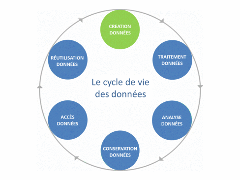

Les étapes importantes
- (Le plan de gestion de données)
- La collecte (venez à l'école technique !)
- Le contrôle qualité et l'intégration (faites des métadonnées !)
- La structuration / sauvegarde
- Le traitement / enrichissement
- La publication / diffusion (venez au séminaire "datapapers" !)